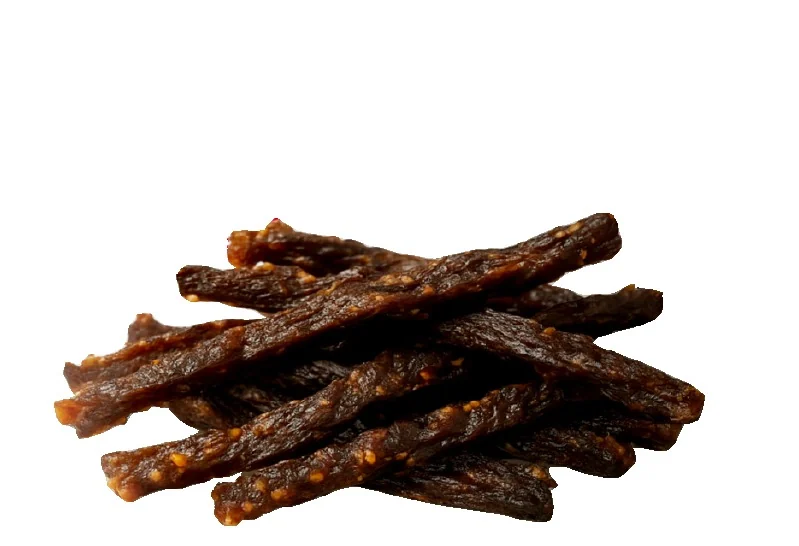

전남광주 공유주방 3기｜50회 이용권으로 시제품·원가 검증하기

지역 농산물 가공상품인 양평 느타리버섯포 참고 사진. 전남광주 공유주방 생산품은 아닙니다.
전남광주 농식품가공창업보육센터의 3기 공유주방 창업팀 모집은 12월 11일 오후 4시까지입니다. 시설·장비가 무상이라고 제품 생산비가 모두 없어지는 것은 아닙니다. 교육 이수와 영업신고 준비, 실제 생산 시간을 함께 계산하세요.
신청 전에 교육과 팀원 서류부터 확인합니다
모집 규모는 30팀이며 팀은 대표 포함 1~8명입니다. 주민등록 기준 지역 내 만 19세 이상 성인으로, 지역 농산물을 활용한 식품 가공 창업·시제품 개발 등을 준비하는 사람을 대상으로 합니다. 공고는 팀 전원의 필수교육 이수와 건강진단결과서, 지역농산물 활용계획 등을 요구합니다. 지역 농산물 활용 비율은 5% 이상이며 레시피로 제출합니다.
12월 11일 교육과 접수 마감이 같은 날입니다
필수교육인 공유주방 첫걸음 과정은 11월 13일과 12월 11일로 공지됐습니다. 마지막 교육 당일에 신청까지 끝낼 수 있는지, 교육 신청·수료 확인 절차를 센터 062-613-5431로 미리 확인하세요. 건강진단결과서 발급에는 시간이 걸립니다. 공고문과 안내 기사에 접수 이메일 표기가 달라 전화로 정확한 주소와 도착 여부를 확인하는 편이 안전합니다.
| 생산 준비표 | 직접 적을 값 | 판단 |
|---|---|---|
| 한 번의 생산 | 원물 ___kg → 판매가능 ___개 | 불량·손실을 제외한 수율 |
| 4시간 작업 | 준비 ___분/가공 ___분/청소 ___분 | 예약시간 안에 종료 가능한가 |
| 단위원가 | 재료+포장+검사+배송 배분액 | 무상 장비 외 비용 포함 |
| 판매 전 | 라벨·신고·보관·배송 확인 | 판매 가능 절차가 완료됐는가 |
이용권 50회는 50일 독점 이용권이 아닙니다
선정팀의 최초 이용 기간은 2027년 1월 4일~3월 31일입니다. 한 회는 작업공간 한 테이블을 오전 또는 오후 4시간 이용하는 단위입니다. 예를 들어 2개 테이블을 한 타임 쓰면 2회가 차감됩니다. 팀당 기본 50회를 제공하지만 예약 가능 시간, 위생 검수, 장비 공정이 맞아야 실제 생산할 수 있습니다. 미사용 횟수의 다음 계약 이월은 불가합니다.
무상 범위와 내가 부담할 비용을 나눠 적습니다
시설·장비 무상 시범 운영은 2027년 6월까지 안내돼 있습니다. 원재료, 포장재, 검사·신고, 배송 등 개별 비용의 부담 범위는 별도 확인해야 합니다. 선발 후 필요한 즉석판매제조·가공업 영업신고와 판매 방식별 요건도 관할 기관에 확인하세요. 먼저 소량 시제품의 수율과 공정시간을 측정한 뒤 판매량을 늘리는 순서가 현실적입니다.
작업 전 점검표
- 팀 전원의 교육·건강진단 서류를 확인했다
- 레시피의 지역 농산물 비율을 계산했다
- 한 테이블 4시간 단위로 공정표를 만들었다
공유주방은 큰 시설 투자를 하기 전에 제품과 생산 공정을 검증하는 공간으로 활용하세요.